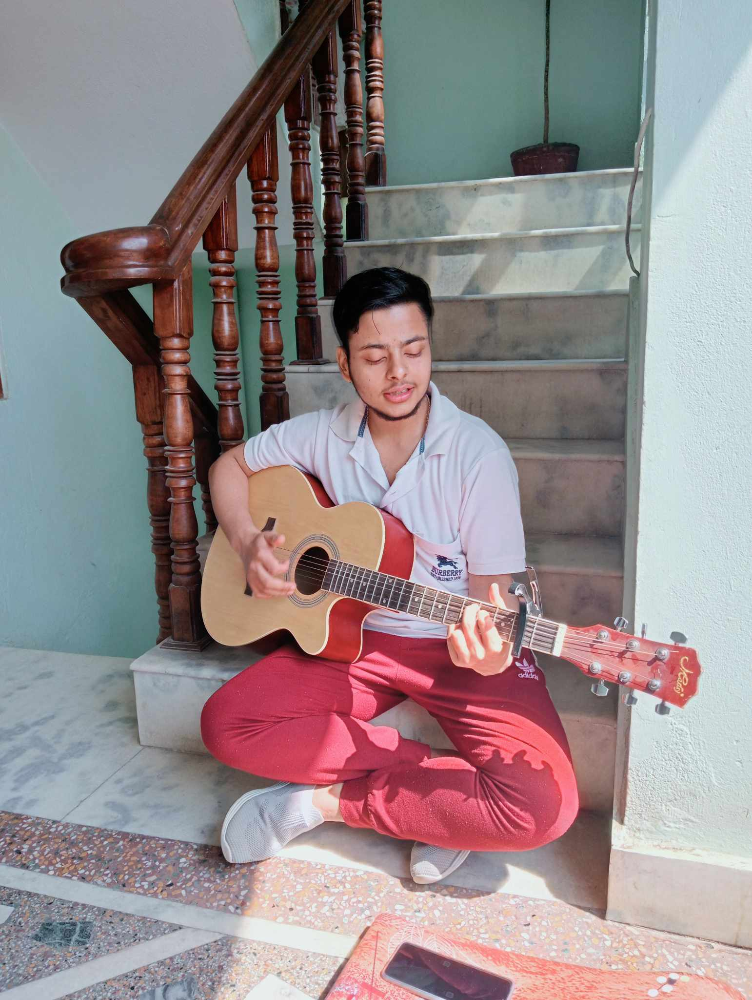

| Name | Sushant Dhakal |
|---|---|
| Phone | 9742354022 |
| sushantdhakal98@gmail.com |
I’m passionate about several areas including martial arts, music, and technology. Below are a few of my key interests:
These activities help me stay balanced. Music is my creative outlet, martial arts sharpens my mind and body, and coding empowers me to bring ideas to life.

Connect with Me